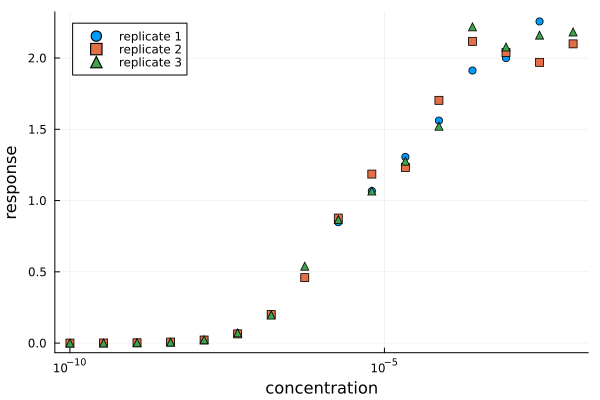

Quick start
The most convenient and recommended way to analyze dose-response data is to use AntibodyMethodsDoseResponseConvenience.jl. This tutorial will not cover all details (e.g. the internal procedure), but will present a short introduction of the basics. To see all details and available options, please have a look at the AnitbodyMethodsDoseResponseConvenience API.
Starting point
Suppose, a dose-response experiment with 3 replicates was conducted, leading to the following dose-response curves:
Loading Data
Importing general data into Julia is not the scope of the AntibodyMethods packages. For this, use e.g. DelimitedFiles.jl or CSV.jl in conjunction with DataFrames.jl. Nevertheless, as short introduction, assume that the data is stored in a csv file, where the columns are (concentrations, replicate 1, ..., replicate 3). Using DelimitedFiles.jl the data can be imported as follows:
using DelimitedFiles
csv_data = readdlm("path_to_file")16×4 Matrix{Float64}:
1.0e-10 0.000224451 0.000210139 0.00020773
3.41455e-10 0.000714241 0.000852146 0.000732735
1.16591e-9 0.00223389 0.00215432 0.00248306
3.98107e-9 0.00819273 0.00727414 0.00697467
1.35936e-8 0.0219266 0.0217057 0.0234153
4.64159e-8 0.0676485 0.0647084 0.0716624
1.58489e-7 0.201794 0.201141 0.196947
5.4117e-7 0.459871 0.459437 0.539521
1.84785e-6 0.848234 0.877551 0.866328
6.30957e-6 1.06704 1.18593 1.06708
2.15443e-5 1.30594 1.23278 1.27688
7.35642e-5 1.56117 1.70323 1.52194
0.000251189 1.91234 2.11712 2.21884
0.000857696 1.99976 2.03804 2.07746
0.00292864 2.25666 1.96975 2.16082
0.01 2.09907 2.09943 2.1829To separate the different columns into independent arrays, which will be needed in the following, use:
conc = csv_data[:,1] # concentrations
rep_1 = csv_data[:,2] # replicate 1
rep_2 = csv_data[:,3] # replicate 2
rep_3 = csv_data[:,4] # replicate 3Defining a fitting condition
Before the data can be analyzed (model fitting), it needs to be summarized in a FittingCondition object. A FittingCondition object contains both the data and the fitting instructions, which can be specified with keywords. The (recommended) default analysis can be obtained by only passing the data, and the scale keyword.
fitting_condition = FittingCondition(conc, rep_1,rep_2,rep_3,
scale = 500,
path = "path_to_store_results"
)To avoid overfitting of sparse, noisy dose-response data, some sort of regularization constraint is necessary. The scale keyword determines the scale of a penalty term to prevent jagged/spiky histograms. Not using the scale keyword results in a weighted least squares objective.
Too small scale values only lead to an inefficient least squares objective. Too large scale values, however, can prevent the model to replicate the data at all. In cases, where the fitting result does not correspond to the data at all, try significantly smaller scale values.
Since curve-fitting can be a time-consuming process, it is recommended to save the results into files. This allows to re-plot the results at a later time, without having to re-run the fitting process. The path keyword defines the directory for the result files. If path="", which is the default option, no files are saved.
Constructing a FittingCondition object by passing the different replicate responses will default to the standard deviation of the data points for the measurement error. If only a single response is used, the replicates field will be empty (nothing) and the measurement errors are set to ±1. Different errors can be used by constructing the FittingData object manually:
errors = 0.1 .* responses
data = FittingData(concentrations,responses, errors)
fitting_condition = FittingCondition(data, scale = 500, path = "path_to_store_results")Fitting a condition
After defining a FittingCondition, the data can be analyzed to obtain the estimated $K_\tau$-density. Since the fitting instructions are already contained in the FittingCondition object, fitting the data is just a simple function call:
results = fit_condition(fitting_condition)fit_condition returns an AdaptiveResult object results. If a path is specified in the FittingCondition object, the results and data are also saved into files.
To keep the rest of this tutorial identical for both cases, results and data just obtained and results and data loaded from files, we define:
data = fitting_condition.data
replicates = fitting_condition.replicatesLoading results
In general, it is not necessary to load the results, as fit_condition returns the results. However, since the fitting process is time-consuming, it is a good idea to save the results into files (see path keyword above). After e.g. a restart of Julia, the results and data can be loaded as follows:
results, data, replicates = load_results("path_to_stored_results")This allows to re-plot the results at a later time, without the need to re-run the analysis.
The results, data and replicates are saved with Serialization.jl. Loading objects into a new instance of Julia does not re-instantiate referenced functions. In other words, the distribution functions of loaded FittingData objects do not work. Hence, loaded FittingData objects cannot be used for fitting. Instead, one should define new FittingData objects from scratch:
new_data = FittingData(data.independent, data.dependent, data.errors, distributions = ....)The default distributions created by the FittingCondition constructor are
(y,m,Δy)-> -(y-m)^2/Δy^2Plotting the results
To visualize the results, different plotting functions are provided. The most straightforward one is bin_analysis_plot, which returns 2 plots, the dose-response plot and the density plot:
using Measures
dr_plot, density_plot = bin_analysis_plot(results,data,replicates)
plot(dr_plot, density_plot, layout = (1,2), size = (800,300), margins = 4mm)The Measures package is used here, to define the margins between the individual plots.
AntibodyMethodsDoseResponseConvenience.jl uses Plots.jl in the background to generate the plots. All methods and options of Plots.jl are immediately available; it is not necessary to import Plots.jl with using Plots. The returned plots dr_plot and density_plot are full plot objects, that can be saved directly with savefig(dr_plot,"file_name"). Plots.jl also allows to re-draw plot objects, allowing to compose images (see Partial plotting and the combination of plots).
The second plotting function is peak_analysis_plot, which visualizes the effect of different peaks on the dose-response curve:
individual_dr_plot, cumulative_dr_plot, peak_plot = peak_analysis_plot(results, data)
plot(individual_dr_plot, cumulative_dr_plot, peak_plot, layout = (2,2), size = (800,600))The top-left plot shows the individual dose-response curves of the different peaks (bottom-left plot) as they would appear if only the respective peak was present alone. The cumulative plot (top-right) shows the contribution of each peak to the total dose-response curve.
Without additional keywords, the peaks are determined automatically with peak_detection. Peak regions can also be manually selected. E.g. two isolated ranges $[10^{-7},10^{-5}]$ and $[10^{-4}, 10^{-3}]$ could be selected using bins = [[1e-7,1e-5],[1e-4,1e-3]].
Partial plotting and the combination of plots
Note that the peak analysis plots did not contain the replicates. This is by design, as the different plots can be combined. For this, we create a partial bin_analysis_plot, where only the data points and the replicates are plotted:
dr_data_plot, empty_density_plot = bin_analysis_plot(nothing,data, replicates)
plot(dr_data_plot)Setting any of the arguments to nothing will omit the argument in the plot. E.g. just plotting the resulting curve, without the data can be achieved with bin_analysis_plot(results,nothing,nothing).
The cumulative dose-response, i.e. the contribution of the peaks to the total dose-response curve, can now be plotted on top of the data plot dr_data_plot, using the additional keyword cumulative_dr_plot = dr_data_plot. Since the data points are already contained in the dr_data_plot, they should not be plotted again with peak_analysis_plot, hence the argument nothing:
individual_dr_plot, cumulative_dr_plot, peak_plot = peak_analysis_plot(results, nothing, cumulative_dr_plot = dr_data_plot)
plot(cumulative_dr_plot, peak_plot, layout = (1,2), size = (800,300), margins = 4mm)
Plotting options
The plotting functions bin_analysis_plot, peak_analysis_plot and uncertainty_plot use keyword-generating functions to modify the plotting options. The keyword-generating functions generate the default keyword arguments for the plot, but allow to overwrite the individual keywords. For example the data_options function generates the following keywords:
data_options()(seriestype = :scatter, color = 1, label = "mean values", yerrors = nothing)The individual keywords can by changed when calling the function. Furthermore, it is possible to add new keywords:
data_options(label = "new label text", markershape = :utriangle)(seriestype = :scatter, color = 1, label = "new label text", yerrors = nothing, markershape = :utriangle)There is no need to save the resulting keyword arguments. The keyword generating function can be called (as keyword argument) in the plotting function:
dr_plot, empty_plot = bin_analysis_plot(results,data, replicates,
data_arguments = data_options(label = "new label text", markershape = :utriangle)
)
plot(dr_plot)The first idea to allow plot modifications involves global keywords, that could then be changed individually. However, different objects of the plots (e.g. the result and the data) have coinciding keywords, e.g. the color. But writing new, unique keywords for all the existing Plots.jl keywords is impossible.
Hence tuples of keywords that correspond to the different parts of the plot (e.g. the result, the data and the replicates) are used. This allows to use the same keyword for different parts of the plot.
To define the default behavior, a default tuple of keywords could be used. However, then if only one keyword needed to be changed, the user would have to create a new tuple, copying over the unchanged keywords, which is inconvenient. Thus, keyword-(tuple)-generating functions are provided that produce the default keyword tuple but allow to change individual keywords.
Another example of generating functions, are the base-plot functions. In the previous section (Partial plotting and the combination of plots) it was used that bin_analysis_plot, peak_analysis_plot and uncertainty_plot plot on top of preexisting plots. In fact, even when e.g. dr_plot is not explicitly changed, dr_plot = dr_base_plot() is used to create an empty plot (with some options pre-configured). Calling dr_base_plot allows to change those pre-configured options:
dr_plot, empty_plot = bin_analysis_plot(results,data, replicates,
dr_plot = dr_base_plot(xlabel = "concentrations", legend = :none)
)
plot(dr_plot)A complete list of these generating functions and how to use them in the different plotting functions can be found in the AnitbodyMethodsDoseResponseConvenience API.